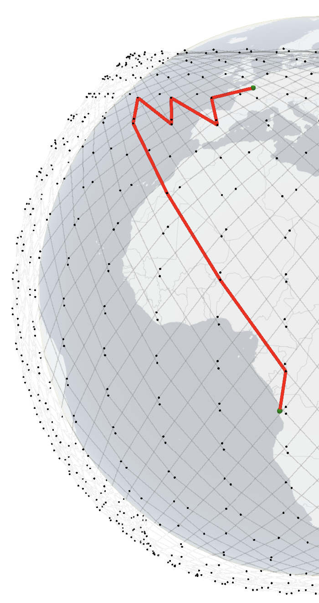

| LEO satellite networks | SpaceX Starlink | Amazon Kuiper | Telesat |
Sources: https://fcc.report/IBFS/SAT-LOA-20161115-00118/1158350 https://fcc.report/IBFS/SAT-LOA-20170726-00110 https://fcc.report/IBFS/SAT-MOD-20181108-00083 https://fcc.report/IBFS/SAT-MOD-20190830-00087 https://fcc.report/IBFS/SAT-MOD-20181108-00083/1569860.pdf |
|
||||||||||||||||||||||||||||||||||||
| Delhi, India | Oslo, Norway |
| Santiago, Chile | Christchurch, New Zealand |
|  | ||
| RTT is 117 ms. 3D (Firefox) | RTT is 85 ms. 3D (Firefox) |